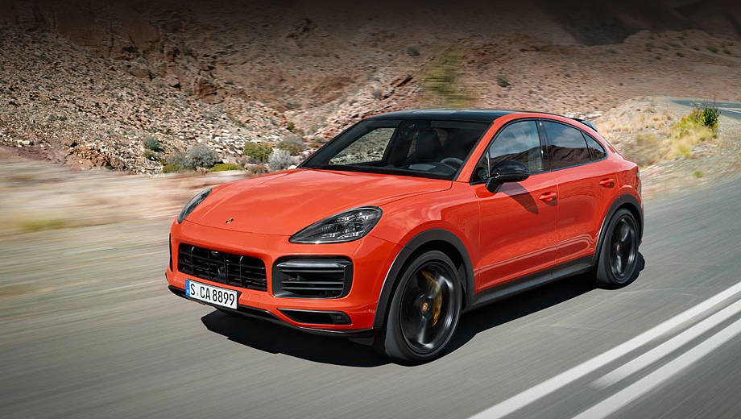

BMW X5 |
|
| more image | TheX5 made its debut in 1999.It was BMW's first SUV and it also featured all-wheel drive and was available with either manual or automatic transmission. In 2006, the second generation X5 was launched, known internally as the E70. Introduced in the facelift version of the E53, the E70 also featured the torque-split capable xDrive all-wheel drive system mated to an automatic transmission. In 2009, the X5 M performance variant was released as a 2010 mode |
Porsche Cayenne |
|
|  more image | The Porsche Cayenne is a mid-size luxury crossover sport utility vehicle produced by the German manufacturer Porsche since 2002, with North American sales beginning in 2003. It is the first V8-engined vehicle built by Porsche since 1995, when the Porsche 928 was discontinued. It is also Porsche's first off-road variant vehicle since its Super and Junior tractors of the 1950s, and the first Porsche with four doors. Since 2008, all engines have featured direct injection technology. |